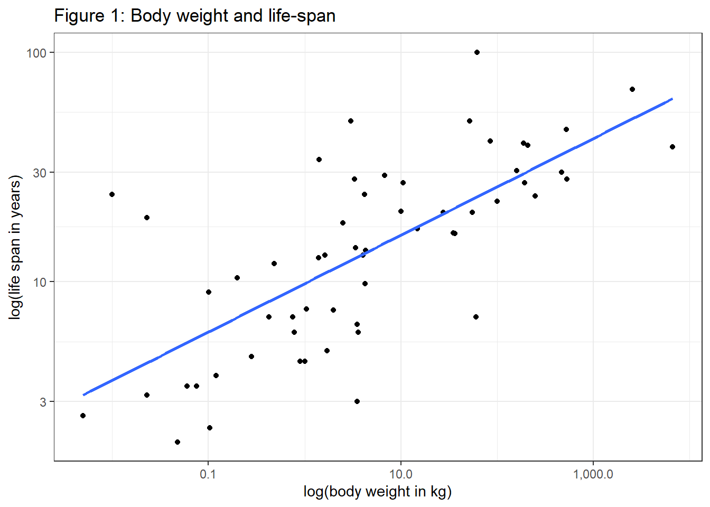

#Preliminaries:
knitr::opts_chunk$set( message=FALSE, warning=FALSE) #echo = FALSE,
rm(list=ls())
library(tidyverse)
library(viridis)
library(scales)
library(stargazer)
library(WDI)
library(plotly)
theme_set(theme_light())Size matters – in many situations the formula \(Y=aX^\beta\) can describe the empirical association between observed outcomes (Y) and size (X), e.g. for living organisms life expectancy (Y) is found to scale as size (X) to the power of 1/4. Geoffrey West argues in his extraordinary book ‘Scale’ (West 2017) that networks are a key aspect in such power laws in the biological domain, but also in cities and companies. Crucial for his analysis is that networks (such as vessels in animals, or pipelines in cities) are 1. invariant at their end points, 2. space filling and 3., optimization is taking place (evolution). For the biological domain nonlinear scaling is derived for a vast number of attributes based on these 3 assumptions, eg. there is a nonlinear association between between animal size and blood pressure. Furthermore, according to West the literature seems to suggest that, after taking the logarithms of variables, these correlations regularly involve number 4. West’s discussion of the role of scaling laws in the biological domain suggests that the magic number is rather 4 than 42, as suggested by Adams (2017). ;)
Let’s have a look at data from the real world (Allison and Cicchetti 1976). According to West the association between life span and body size should be about 1/4.
#sleep.txt generated from http://lib.stat.cmu.edu/datasets/sleep
#Data import and manipulation:
sleep_raw <- read_lines(
"sleep.txt",
skip = 50,
n_max = 62
)
mplt_slr <- str_locate_all(sleep_raw, "\\s[\\d\\.\\-]")
sleep_index <- c(1:length(sleep_raw))
for (i in sleep_index) {
for (j in c(1:10)) {
str_sub(sleep_raw[i],mplt_slr[[i]][j,1], mplt_slr[[i]][j,1]) <- ","
}}
sleep_df <- as.data.frame(sleep_raw) %>%
separate( col=1, sep=",", into=c("species", "body_weight_kg", "brain_weight_g", "hrs_slow_wave_sleep", "hrs_paradoxical_sleep", "hrs_total_sleep", "maximum_life_span", "gestation_time", "predation_index", "sleeping_exp._index", "overall_danger_index")) %>%
mutate(body_weight_kg=as.numeric(body_weight_kg), maximum_life_span=as.numeric(maximum_life_span)) %>%
filter(body_weight_kg!=-999 & maximum_life_span!=-999)
#How does data look like?
sleep_df %>%
select(species, maximum_life_span, body_weight_kg) %>%
top_n(3) %>%
stargazer(summary=FALSE, type="text", title="Table 1: Body weight data")##
## Table 1: Body weight data
## ===================================================
## species maximum_life_span body_weight_kg
## ---------------------------------------------------
## 1 African elephant 38.600 6,654
## 2 Asian elephant 69 2,547
## 3 Giraffe 28 529
## ---------------------------------------------------#plot scaled association between life span and life expectancy:
sleep_df %>%
ggplot(aes(y=maximum_life_span, x=body_weight_kg)) + #, color=species
geom_point() +
geom_smooth(method=lm, se=FALSE, aes(color = NULL)) +
scale_x_log10(labels = comma) + #
scale_y_log10() +
scale_colour_viridis_d(option = "turbo") +
theme_bw() +
labs(title="Figure 1: Body weight and life-span", y="log(life span in years)", x="log(body weight in kg)")
There is a lot of variability in the data, the slope is 0.211. But we see an exponential association of 1/4 cannot be rejected statistically with the data at hand:
lm(log(maximum_life_span) ~ log(body_weight_kg), data=sleep_df) %>%
stargazer(type="text", title="Table 2: Association between life-span & body weight", align=TRUE, ci=TRUE)##
## Table 2: Association between life-span & body weight
## ===============================================
## Dependent variable:
## ---------------------------
## log(maximum_life_span)
## -----------------------------------------------
## log(body_weight_kg) 0.211***
## (0.156, 0.266)
##
## Constant 2.282***
## (2.092, 2.473)
##
## -----------------------------------------------
## Observations 58
## R2 0.504
## Adjusted R2 0.496
## Residual Std. Error 0.670 (df = 56)
## F Statistic 57.002*** (df = 1; 56)
## ===============================================
## Note: *p<0.1; **p<0.05; ***p<0.01According to West, similar to animals, cities and even companies can be described by their network structure (people are final leaves in a network). In the context cities, there is sublinear scaling (0.85) for the association between population and infrastructure and superlinear scaling (1.15) in the association between population and e.g. wages. However, other research suggests that such findings for cities may not solely be due to optimization by intra-city processes (Ribeiro et al. 2021). This brings us to the point that power laws are extremely relevant in many aspects of life, and they can emerge due to different mechanisms (Andriani and McKelvey 2006). For example, following Gabaix (2016), the idea of matching can explain the role of power laws in the success of companies: if you have a lot of money you can hire the best employees which leads to more money. Power laws even emerge on the country level as shown in the following. Let us use Worldbank data from 2019 to reveal the empirical association between a country’s income (GDP) and population size:
#fig.asp = 0.8, fig.width = 8.5
#read WB-Data from 2019:
wdi_in <- WDI(
country = "all",
indicator = c("NY.GDP.MKTP.CD", "SP.POP.TOTL", "SP.URB.TOTL.IN.ZS"),
start = 2019,
end = 2019,
extra = TRUE,
cache = NULL,
latest = NULL, #=1
language = "en"
)
wdi_sel <- wdi_in %>%
filter(region!="Aggregates")
p3 <- wdi_sel %>%
mutate(sample='value', GDP=NY.GDP.MKTP.CD/1000000000, Population=SP.POP.TOTL/1000) %>%
union(wdi_sel %>%
mutate(sample='log', GDP=log10(NY.GDP.MKTP.CD/1000000000), Population=log10(SP.POP.TOTL/1000))) %>%
mutate(sample=factor(sample, levels=c("value", "log"))) %>%
ggplot(aes(y=GDP, x=Population, text= country, color=region)) + #
geom_point() +
scale_colour_viridis_d(option = "turbo") +
labs(y='GDP in billion USD', x='Population in thousand', title="Figure 2: Association between GDP and population size") +
theme_bw() +
theme(axis.text.y = element_text(angle=90)) +
#, axis.title.x = element_text(margin=margin(t=60)),
# axis.title.y = element_text(margin=margin(r=60))) +
facet_wrap(~sample, scales = "free")
ggplotly(p3)A visual inspection of data (Figure 2) shows as expected: GDP increases as population grows. However, whereas a lot of variability and extreme values are found in the left plot where total values are shown, the logarithmic scale again reveals a linear relationship of the 2 variables.
lm(log(NY.GDP.MKTP.CD) ~ log(SP.POP.TOTL), data=wdi_sel) %>%
stargazer(type="text", title="Table 3: Association population size & GDP", align=TRUE, ci=TRUE)##
## Table 3: Association population size & GDP
## ===============================================
## Dependent variable:
## ---------------------------
## log(NY.GDP.MKTP.CD)
## -----------------------------------------------
## log(SP.POP.TOTL) 0.800***
## (0.719, 0.880)
##
## Constant 11.949***
## (10.701, 13.197)
##
## -----------------------------------------------
## Observations 205
## R2 0.651
## Adjusted R2 0.650
## Residual Std. Error 1.397 (df = 203)
## F Statistic 379.453*** (df = 1; 203)
## ===============================================
## Note: *p<0.1; **p<0.05; ***p<0.01The scaling exponent using country level data suggests sublinear scaling of about 0.8, ie. if the population doubles, GDP grows by 80 percent (on average). However, although interesting, it would again be helpful to understand the underlying mechanisms, especially from a developmental perspective. Whereas the right hand side of Figure 2 is quite a helpful if one is interested in looking at single data points or if linear modeling is needed, this representation can hide some important characteristics of the untransformed data as well.